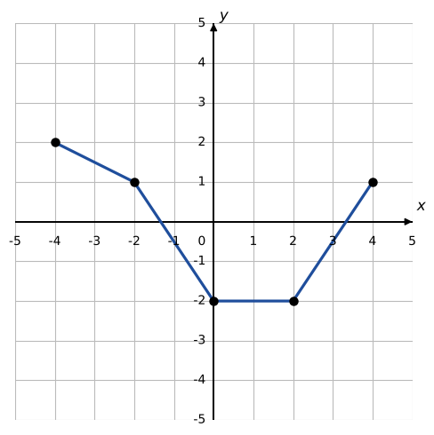
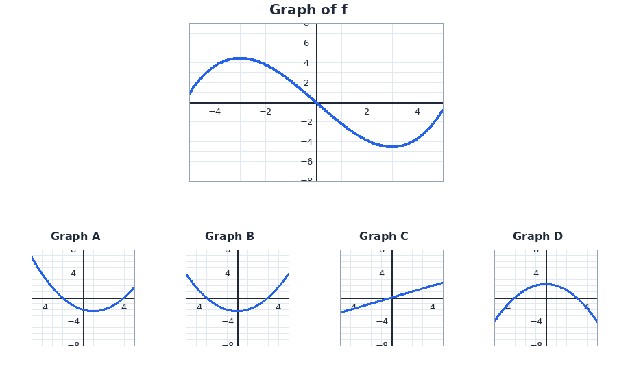

Section I, Part A · Multiple choice · No calculator · 60 minutes
- C(x) = (1/25)x² + 69x + 635 is the cost in dollars to produce x items. Find C′(20) and include units.(A)70.6 items per dollar(B)70.6 dollars per item(C)101.55 dollars per item(D)2031 dollarsAnswer: (B) 70.6 dollars per item
- C′(x) = (2/25)x + 69.
- C′(20) = 70.6.
- Units: dollars per item.
- On what interval(s) is f(x) = x + 4/x increasing?(A)(-∞, -2) ∪ (2, ∞)(B)(0, ∞)(C)(-∞, ∞)(D)(-2, 0) ∪ (0, 2)Answer: (A) (-∞, -2) ∪ (2, ∞)
- f′(x) = (x + 2)(x - 2)/(x²).
- f′(x) = 0 at x = -2, 2 (and f′ or f is undefined at x = 0).
- Test the sign of f′ on each interval of the domain.
- f is increasing on (-∞, -2) ∪ (2, ∞).
- Rain falls at R(t) = 0.4t + 0.4 inches per hour. How much rain falls in the first 8 hours?(A)3.6 inches(B)2 inches(C)16 inches(D)28.8 inchesAnswer: (C) 16 inches
- Total = ∫ from 0 to 8 (rate) dt = ∫ from 0 to 8 (0.4t + 0.4) dt.
- Antiderivative: F(t) = (1/5)t² + (2/5)t.
- F(8) = 16 and F(0) = 0.
- F(8) − F(0) = 16 − 0 = 16.
- Total = 16 inches.
- Solve y′ = 2x + 4 with y(0) = -6.(A)y = x² + 4x(B)y = 2x² + 4x - 6(C)y = x² + 4x - 6(D)y = 2x - 2Answer: (C) y = x² + 4x - 6
- y = ∫ (2x + 4) dx = x² + 4x + C.
- y(0) = C = -6.
- y = x² + 4x - 6.
- Find f′(-1) for f(x) = x²e^(2x).(A)1(B)2(C)0(D)1/e²Answer: (C) 0
- Product rule (u·v) with u = x² and v = e^(2x): u′ = 2x, v′ = 2e^(2x).
- f′(x) = u′v + uv′.
- f′(x) = 2x(x + 1)e^(2x).
- f′(-1) = 0.
- y′ = 5y and y(0) = 7. Find y′(0).(A)12(B)7(C)35(D)5Answer: (C) 35
- y′(0) = 5·y(0).
- = 5(7) = 35.
- Find the x-coordinates of all inflection points of f(x) = x⁴ - 2x³ - 36x² + x.(A)x = 0(B)x = 2 or x = -3(C)x = -2 or x = 3(D)x = 1/2Answer: (C) x = -2 or x = 3
- f″(x) = 12x² - 12x - 72 = 12(x - 3)(x + 2).
- f″ changes sign at both zeros.
- x = -2 or x = 3.
- Use the trapezoidal rule with the subintervals in the table to approximate ∫ from 0 to 8 f(x) dx. f(0) = 2; f(3) = 26; f(6) = 28; f(7) = 17; f(8) = 27.(A)129(B)335/2(C)171/2(D)300Answer: (B) 335/2
- Each trapezoid: width × average of the two heights.
- [0, 3]: 3 × (2 + 26)/2 = 42; [3, 6]: 3 × (26 + 28)/2 = 81; [6, 7]: 1 × (28 + 17)/2 = 45/2; [7, 8]: 1 × (17 + 27)/2 = 22.
- Sum = 335/2.
- Find d/dx [∫ from -1 to e^x t³ dt].(A)e^(4x) + 1(B)x³e^x(C)e^(3x)(D)e^(4x)Answer: (D) e^(4x)
- FTC with the chain rule: d/dx ∫ from a to u(x) f(t) dt = f(u(x))·u′(x).
- Here f(t) = t³, u(x) = e^x, u′(x) = e^x.
- The lower limit -1 is a constant, so it adds nothing.
- Result: e^(4x).
- Use the tangent line to f(x) = e^x at x = 0 to approximate f(0.1). Is the approximation an overestimate or an underestimate?(A)1, an overestimate(B)1.2, an underestimate(C)1.1, an overestimate(D)1.1, an underestimateAnswer: (D) 1.1, an underestimate
- f(0) = 1 and f′(0) = 1, so L(x) = 1 + 1(x − 0).
- L(0.1) = 1.1.
- f″ is positive near x = 0, so the graph is concave up and the tangent line lies below it: an underestimate.
- Find the value of k that makes f continuous everywhere: f(x) = x² + x for x < 3, and f(x) = kx + 1 for x ≥ 3.(A)k = 11/3(B)k = 11(C)k = 13/3(D)k = -11/3Answer: (A) k = 11/3
- Both pieces must have the same value at x = 3.
- Set the left piece at a equal to the right piece at a.
- k = 11/3.
- Find f′(x) for f(x) = (x² + 2)³.(A)6x(x² + 2)³(B)3x(x² + 2)²(C)6x(x² + 2)²(D)3(x² + 2)²Answer: (C) 6x(x² + 2)²
- Chain rule: the inside is u = x² + 2, with u′ = 2x.
- Differentiate the outside, keep the inside, then multiply by u′.
- f′(x) = 6x(x² + 2)².
- f(x) = 2x³ - 54x - 4 has a critical number at x = -3. Use the second derivative test to classify it.(A)relative maximum(B)relative minimum(C)neither(D)point of inflectionAnswer: (A) relative maximum
- f″(x) = 12x.
- f″(-3) = -36.
- f″ < 0, so a relative maximum.
- Find F(x) if F′(x) = -12x² - 10x and F(1) = 7.(A)F(x) = -4x³ - 5x² + 16(B)F(x) = -4x³ - 5x² + 7(C)F(x) = -24x - 3(D)F(x) = -4x³ - 5x² - 16Answer: (A) F(x) = -4x³ - 5x² + 16
- Antidifferentiate: F(x) = -4x³ - 5x² + C.
- F(1) = -9 + C = 7, so C = 16.
- F(x) = -4x³ - 5x² + 16.
- Which shows the variables of y′ = 5xy correctly separated?(A)(1/x) dx = 5y dy(B)(1/y) dy = 5x dx(C)y dy = 5x dx(D)dy = 5xy dxAnswer: (B) (1/y) dy = 5x dx
- Get all y terms with dy and all x terms with dx.
- (1/y) dy = 5x dx.
- Can L'Hôpital's Rule be applied directly to lim (x → 0) sin(3x)/x?(A)No, the rule only works for limits at ∞.(B)Yes, L'Hôpital's Rule works on any quotient.(C)Yes, substitution gives 0/0.(D)No, substitution does not give 0/0 or ∞/∞.Answer: (C) Yes, substitution gives 0/0.
- Substitute first: the rule applies only to 0/0 or ∞/∞.
- Yes, substitution gives 0/0.
- Classify the discontinuity of f(x) = (x - 2)/(x + 3) at x = -3.(A)removable(B)jump(C)infinite(D)no discontinuityAnswer: (C) infinite
- Find the one-sided limits at x = -3.
- The function grows without bound: infinite.
- Let f(x) = x³ + 5x + 2, which is one-to-one. Find (f⁻¹)′(8).(A)8(B)1/8(C)-1/8(D)1/197Answer: (B) 1/8
- f(1) = 8, so f⁻¹(8) = 1.
- (f⁻¹)′(8) = 1/f′(1) = 1/8 = 1/8.
- Which definite integral equals lim (n → ∞) Σ (k = 1 to n) 1/(2 + k/n) · (1/n)?(A)∫ from 2 to 4 1/x dx(B)∫ from 0 to 1 1/x dx(C)∫ from 2 to 3 1/x dx(D)∫ from 2 to 3 1/(x + 2) dxAnswer: (C) ∫ from 2 to 3 1/x dx
- Δx = 1 ÷ n, so b - a = 1.
- xₖ = 2 + k·Δx, so a = 2 and f(x) = 1/x.
- ∫ from 2 to 3 1/x dx.
- A tank holds 113 L at t = 0. Water enters at E(t) = 5t + 5 L/min and leaves at a constant 20 L/min. How much water is in the tank at t = 5 minutes?(A)601/2 L(B)-25/2 L(C)201/2 L(D)401/2 LAnswer: (C) 201/2 L
- Amount at t = 5 = 113 + ∫ from 0 to 5 (rate in − rate out) dt = 113 + ∫ from 0 to 5 (5t - 15) dt.
- Antiderivative: A(t) = 5t²/2 - 15t.
- A(5) = -25/2 and A(0) = 0.
- A(5) − A(0) = -25/2 − 0 = -25/2.
- Amount = 113 + (-25/2) = 201/2 L.
- Each side of a square increases at 5 in/min. How fast is the area increasing when a side is 14 in?(A)140 in²/min(B)10 in²/min(C)980 in²/min(D)70 in²/minAnswer: (A) 140 in²/min
- A = s².
- A′ = 2s·s′.
- = 2(14)(5) = 140 in²/min.
- Given ∫ from 3 to 5 f(x) dx = 9, ∫ from 5 to 8 f(x) dx = 8, and ∫ from 3 to 5 g(x) dx = 10, find ∫ from 3 to 5 (f(x) + 4) dx.(A)13(B)36(C)17(D)29Answer: (C) 17
- Split the integral: ∫ (f(x) + 4) dx = ∫ f(x) dx + ∫ 4 dx.
- ∫ from 3 to 5 4 dx = 4 × (5 − 3) = 8.
- = 9 + 8 = 17.
- The graph of f′, the derivative of f, is shown. At which x-value(s) does f have a relative minimum?
 (A)x = −2 and x = 5(B)x = −3 and x = 4(C)x = −3 and x = −2 and x = 4(D)x = −2Answer: (B) x = −3 and x = 4
(A)x = −2 and x = 5(B)x = −3 and x = 4(C)x = −3 and x = −2 and x = 4(D)x = −2Answer: (B) x = −3 and x = 4- f has a relative maximum where f′ changes from positive to negative, and a relative minimum where f′ changes from negative to positive.
- f′ changes sign at −3, −2, 4.
- Relative minimum: x = −3 and x = 4.
- g(x) = ∫ from -4 to x f(t) dt, where the graph of f is shown on (-4, 4). On what open interval(s) is g increasing?

(A)(-4, 0)(B)(-4, -4/3) ∪ (10/3, 4)(C)(-4/3, 10/3)(D)(-4, 4)Answer: (B) (-4, -4/3) ∪ (10/3, 4)- g′(x) = f(x).
- g is increasing where f(x) > 0.
- (-4, -4/3) ∪ (10/3, 4).
- Find the slope of the tangent line to x² + xy + y² = 7 at the point (-1, 3).(A)1/5(B)2/5(C)-5(D)-1/5Answer: (D) -1/5
- dy/dx = -(2x + y)/(x + 2y).
- At (-1, 3): dy/dx = -1/5.
- Find the area of the region bounded by y = x³ - 2x² - 7x - 4 and y = x³ - x.(A)-1/3(B)-25/6(C)1/3(D)-23/12Answer: (C) 1/3
- The curves meet where x³ - 2x² - 7x - 4 = x³ - x: x = -2 and x = -1.
- At x = -3/2 (between them), y = x³ - 2x² - 7x - 4 is on top.
- Area = ∫ from -2 to -1 [(x³ - 2x² - 7x - 4) − (x³ - x)] dx = ∫ from -2 to -1 (-2x² - 6x - 4) dx.
- Antiderivative: F(x) = -2x³/3 - 3x² - 4x.
- F(-1) = 5/3 and F(-2) = 4/3.
- F(-1) − F(-2) = 5/3 − 4/3 = 1/3.
- Area = 1/3.
- Find ∫ 3/(x² - 2x + 10) dx.(A)tan⁻¹((x - 1)/3) + C(B)tan⁻¹(x - 1) + C(C)3ln|x² - 2x + 10| + C(D)3tan⁻¹((x - 1)/3) + CAnswer: (A) tan⁻¹((x - 1)/3) + C
- Complete the square: x² - 2x + 10 = (x - 1)² + 9.
- Use ∫ 1/(u² + a²) du = (1/a)tan⁻¹(u/a) + C with u = x - 1 and a = 3.
- ∫ 3/(x² - 2x + 10) dx = tan⁻¹((x - 1)/3) + C.
- Evaluate ∫ from -2 to 1 (6x² + 8x + 3) dx.(A)6(B)-15(C)9(D)15Answer: (D) 15
- Antiderivative: F(x) = 2x³ + 4x² + 3x.
- F(1) = 9 and F(-2) = -6.
- F(1) − F(-2) = 9 − (-6) = 15.
- For f(x) = (x² - x - 2)/(x + 1), a table gives f(-1.1) ≈ -3.1000; f(-1.01) ≈ -3.0100; f(-1.001) ≈ -3.0010; f(-0.999) ≈ -2.9990; f(-0.99) ≈ -2.9900; f(-0.9) ≈ -2.9000. Estimate lim (x → -1) f(x).(A)0(B)-2.9000(C)does not exist(D)-3Answer: (D) -3
- Look at the values as x gets closer to -1 from both sides.
- They approach -3.
- lim (x → -1) f(x) = -3.
- The graph of f is shown at the top. Which graph, A, B, C or D, could be the graph of f′?

(A)Graph A(B)Graph B(C)Graph C(D)Graph DAnswer: (B) Graph B- f has horizontal tangents (relative extrema) at x = -3 and x = 3, so f′ must be 0 there.
- f is increasing for x < -3, so f′ is positive there.
- Only Graph B has zeros at x = -3 and x = 3 with the right signs.